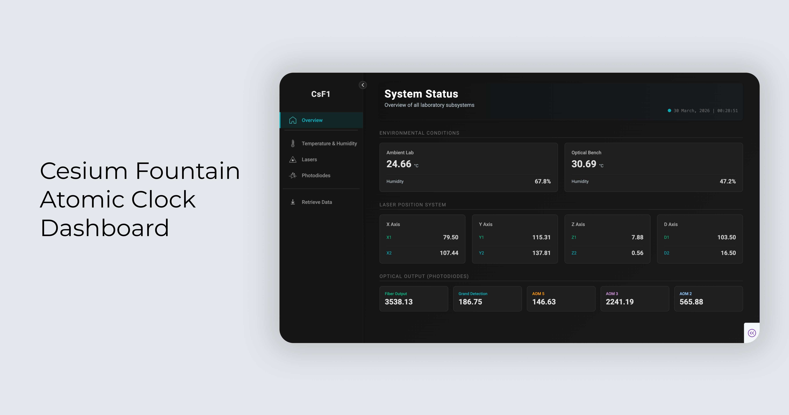
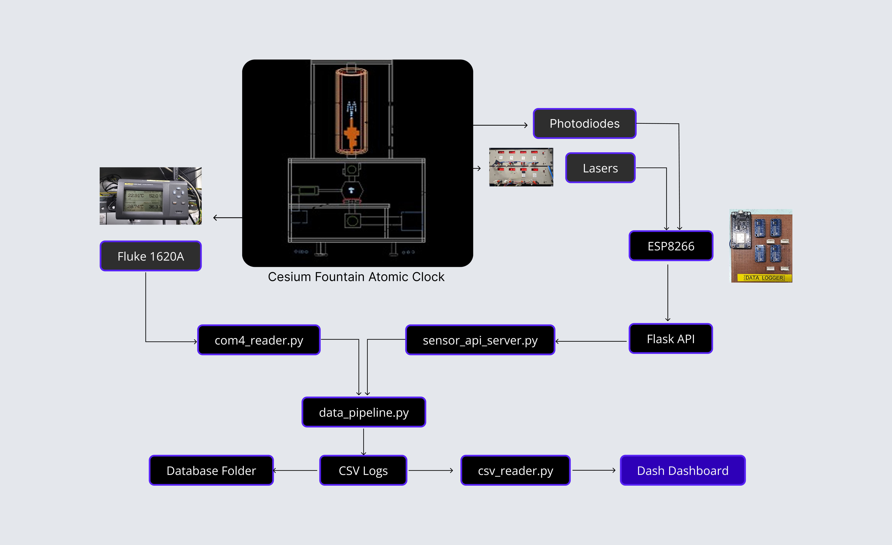
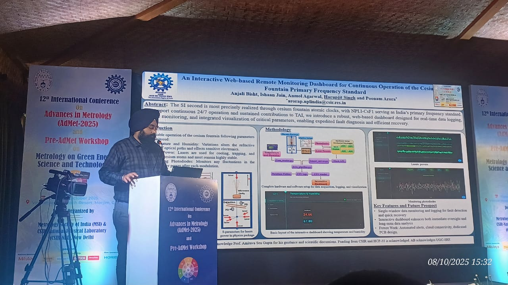

One dashboard for atomic clock monitoring
Developed during my R&D internship at CSIR-NPL under Dr. Poonam Arora, this dashboard consolidated isolated monitoring tools into a centralized platform for scientists operating the Cesium Fountain Atomic Clock.
Launch PrototypeThe CsF1 defines the SI second. Small changes in temperature, humidity, laser alignment, or photodiode voltage can affect observations, so the dashboard needed to make issues visible quickly.
Signals lived in separate tools
Temperature, humidity, and laser readings were split across fragile scripts and hardware-specific interfaces.
Photodiodes had no dedicated monitor
A critical feedback system for laser and detector health needed its own monitoring view.
Monitoring had to support long sessions
Frequent errors and manual checks created risk during experiments where small changes can affect clock stability.
02 · Lab Constraint
Designed for low-light lab conditions
Constraint
No high-luminance UI
The CsF1 lab operates under strict optical conditions. The dashboard had to avoid bright surfaces near the experiment setup.
Visual response
Dark interface with clear status colors
Dark backgrounds reduced screen brightness, while cyan, green, orange, and coral helped separate dense data streams.
Reading pattern
Fast status checks
Scientists could see active modules, connection status, and anomalies without reading every label.
The dashboard brought lab instruments, logged sensor data, and live monitoring into one interface.
Temperature, laser, and photodiode readings start from separate devices.
Flask validates readings, timestamps them, and writes daily CSV logs.
Plotly Dash turns the logs into status cards, charts, and exports.

Required sensor fields are checked before storage.
Readings keep IST, UTC, and MJD for later analysis.
The interface refreshes automatically every 10 seconds.
04 · Style Guide
Typography & Colors
Aa
Roboto
Used for headings, navigation, controls, and card text.
26.4
Monospace
Used for timestamps, readings, IDs, and aligned technical values.
05 · Dashboard Walkthrough
Key Screens and Interactions
Overview
System status at a glance
The overview brings ambient conditions, laser coordinates, photodiode values, connection health, and last update time into one view. The sidebar can collapse when scientists need more room for live monitoring.
Temperature & Humidity
Compare lab conditions over time
Ambient room air and optical-bench readings are plotted together so scientists can compare environmental changes. Hovering on the line reveals the timestamp and exact reading for closer inspection.
Lasers
Compare paired axis readings
Laser readings are grouped by axis so X1/X2, Y1/Y2, Z1/Z2, and D1/D2 can be compared quickly. The interaction shows how paired values and trend lines stay together while monitoring drift.
Photodiodes
Follow detector traces
Colored reading cards match the graph traces, helping scientists connect fiber output, grand detection, and AOM channels to the live chart. The interaction makes detector shifts easier to track visually.
Retrieve Data
Plot or export history
Historical analysis is separated from live monitoring so the main dashboard stays focused. Scientists can choose a data source and date range, then plot readings or export CSV files when review is needed.
Outcome
A single tool for live monitoring and data review
Single monitoring tool
Combined environmental, laser, photodiode, and retrieval workflows into one dashboard.
Faster diagnosis
Grouped paired lasers, photodiode traces, and connection states so scientists could identify imbalance and light-chain failures quickly.
Research-ready data
Historical queries, scientific timestamps, and CSV export supported analysis without interrupting live monitoring.
Presented Work
Shared at AdMet 2025
12th International Conference on Advances in Metrology and Standards
This work was presented at AdMet 2025, the flagship Advances in Metrology conference organized around research, industrial applications, and emerging measurement technologies.
